The Great Race & Your Fortune
According to the legend, the Jade Emperor organized a "Great Race" across a river to determine the order of the zodiac signs. The order they finished the race is the order they appear in the calendar today.
Discover Your Sign
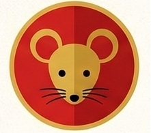
1st: Rat 鼠
Clever, Resourceful, Adaptable
The cunning winner who used the Ox to cross the river.
Lucky Colors: Blue, Gold, Green
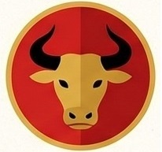
2nd: Ox 牛
Strong, Reliable, Honest
A kind-hearted worker who carried others across the finish.
Lucky Colors: White, Yellow, Green
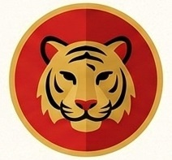
3rd: Tiger 虎
Brave, Competitive, Passionate
The king of the forest who fought the river currents with power.
Lucky Colors: Blue, Gray, Orange
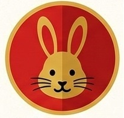
4th: Rabbit 兔
Gentle, Peaceful, Elegant
Calculated every hop and leap across the floating logs.
Lucky Colors: Pink, Red, Purple, Blue
5th: Dragon 龙
Powerful, Confident, Ambitious
The only mythical sign; a hero who stopped to bring rain.
Lucky Colors: Gold, Silver, Grayish White
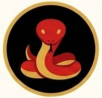
6th: Snake 蛇
Wise, Mysterious, Intuitive
A master of strategy who caught everyone by surprise.
Lucky Colors: Black, Light Yellow, Red
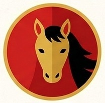
7th: Horse 马
Energetic, Independent, Active
Galloped with freedom and spirit throughout the race.
Lucky Colors: Yellow, Green
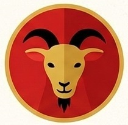
8th: Goat 羊
Gentle, Creative, Compassionate
The team player who worked with the Monkey and Rooster.
Lucky Colors: Brown, Red, Purple
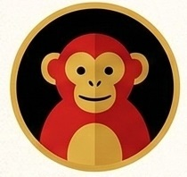
9th: Monkey 猴
Witty, Intelligent, Playful
Guided the raft with agility and clever thinking.
Lucky Colors: White, Blue, Gold
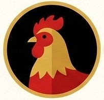
10th: Rooster 鸡
Observant, Hardworking, Brave
The diligent scout who found the raft to cross the river.
Lucky Colors: Gold, Brown, Yellow
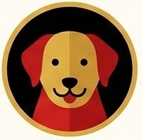
11th: Dog 狗
Loyal, Honest, Kind
Enjoyed the journey so much he forgot he was in a race!
Lucky Colors: Red, Green, Purple
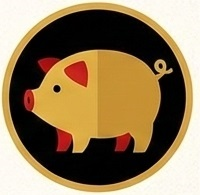
12th: Pig 猪
Compassionate, Generous, Diligent
Finished last but with the biggest smile and a full belly.
Lucky Colors: Yellow, Gray, Brown, Gold